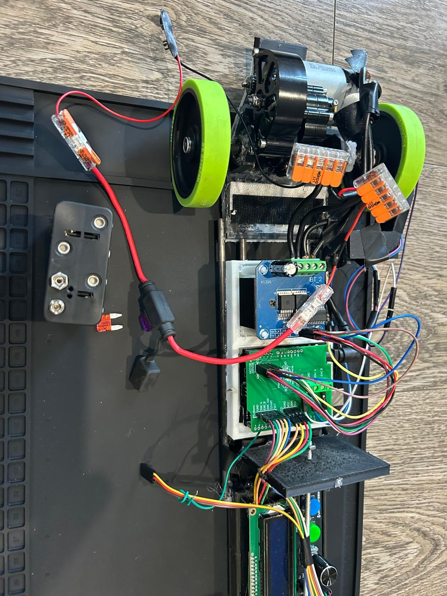
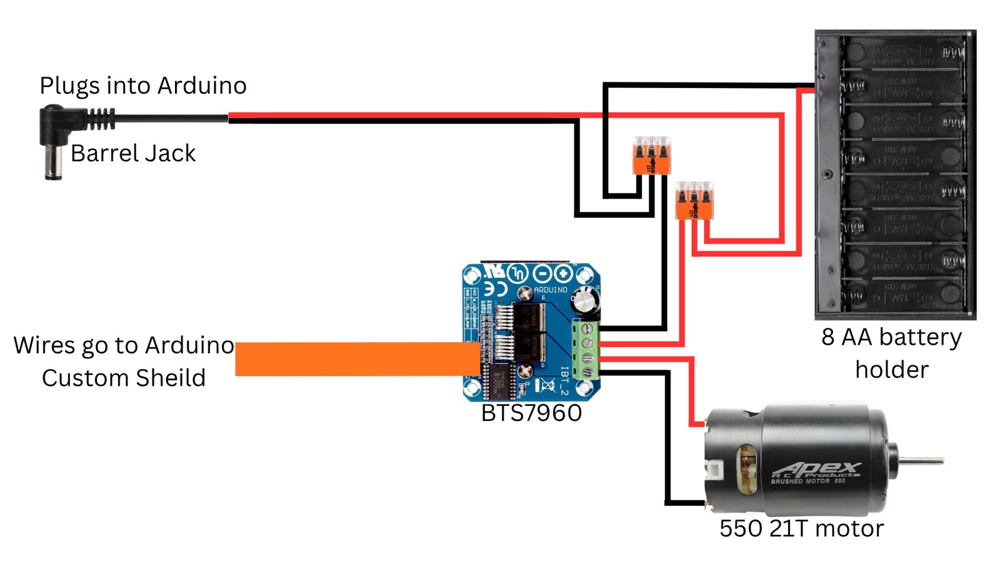
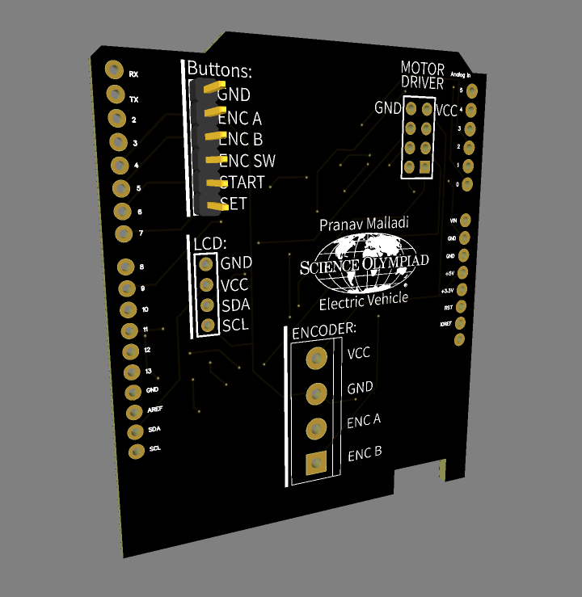

Science Olympiad Electric Vehicle

Overview
In the Science Olympiad Electric Vehicle event, a battery-powered car must travel a target distance (1–10 m) announced at the competition, stop as close to it as possible, and finish as close as possible to a target time (5–30 s). That makes it a precision problem: the vehicle has to be configurable on the spot, measure its own distance, start and stop reliably, and drive straight. I designed the electronics around an Arduino Uno and a high-current motor driver, built a custom shield to replace loose breadboard wiring, and gave the vehicle its own user interface so the target could be set at the track without a laptop.
What this project accomplished
- Designed a custom Arduino shield that assigns pins to every peripheral and provides shared 5 V and ground rails, eliminating the breadboard and its loose connections.
- Built an on-vehicle interface (I2C LCD, a rotary dial with push switch, and Set/Start buttons) for entering the target distance and time at the track without a laptop.
- Measured distance with an AS5600 magnetic encoder on the drive wheel (1,024 counts per revolution, about 0.2 mm of travel per count).
- Wrote a three-phase run controller: drive fast, brake short of the target, then creep the rest of the way in calibrated pulses spaced out to finish on the target time.
- Drove a 550-size brushed motor through a BTS7960 high-current H-bridge, isolating the motor's current from the low-power logic.
- Designed a modular 3D-printed chassis on carbon-fiber rails so each subsystem has its own mount and can be swapped independently.
- Identified the vehicle's length and sighting system as the main sources of error and set a concrete plan to fix both.
Design at a glance
| Microcontroller | Arduino Uno R3 with custom-designed shield |
|---|---|
| Motor driver | BTS7960 high-current H-bridge |
| Drivetrain | Rear-wheel drive, 550-size 21T brushed motor |
| Power | 8 × AA NiMH (≈ 9.6 V nominal), shared by the motor driver and, through a barrel jack, the Arduino |
| Distance sensing | AS5600 magnetic rotary encoder (analog output to A1), 72 mm wheel |
| User interface | 16 × 2 LCD over I2C, rotary dial with push switch, Set and Start buttons |
| Structure | 3D-printed PLA component mounts on carbon-fiber rods |
Electronics
The Arduino Uno R3 is the controller. Instead of wiring every peripheral through a breadboard, I designed a shield that plugs onto the Arduino headers and routes each component to its own pins: the LCD to the I2C bus (SDA/SCL), the rotary dial and the Set/Start buttons to inputs, the encoder to an analog input, and the motor driver's control lines to digital outputs. The shield also distributes 5 V and ground to every component, which removed the most common source of intermittent faults.
An Arduino pin can only source a few milliamps, while a 550 motor draws amps. The BTS7960 H-bridge sits between them: the Arduino sends low-power direction and speed signals, and the driver switches the battery pack's current through the motor. The 8-cell NiMH pack powers the driver directly and also feeds the Arduino through its barrel jack.
Distance comes from an AS5600 magnetic encoder: a magnet turns with the wheel, and the sensor outputs its angle as a voltage that the Arduino reads as 0–1023, so one wheel revolution is 1,024 counts. With a 72 mm wheel (about 22.6 cm per revolution), each count is roughly 0.2 mm of travel. The firmware converts the target distance into a target number of wheel rotations and stops the motor when the count reaches it.


Structure
The chassis is modular: separate 3D-printed parts, each holding one component (one for the Arduino, one for the motor driver, and so on), slide onto a rail of carbon-fiber rods. Printing the whole vehicle as one part wasn't possible on a standard printer bed, and the rod rail gave a stiff, lightweight backbone while letting me reposition or reprint any single mount without rebuilding the car.
Software
The firmware (Arduino C++) has three screens. On the first, the dial sets the target distance; pressing the dial cycles the step size from 1 m down to 1 mm. The Set button moves to the target time screen, then to a ready screen showing both. Pressing Start runs the car through three phases, and the LCD shows the final distance and time when it stops.
- Drive. The motor runs at 50% power until the car reaches a slowdown point 20, 40, or 60 cm short of the target (a bigger buffer for longer runs, since the car carries more speed). A short reverse pulse brakes it, and the encoder keeps counting while it coasts.
- Calibrate. One test pulse (10% power for 0.2 s) measures how far a single pulse actually moves the car on this floor with this battery charge.
- Creep. The firmware divides the remaining distance by that measurement to get the number of pulses needed, then spreads them over the time left so the car arrives close to the target time. It stops early the moment the encoder reaches the target.
Safety limits keep a bad reading from sending the car off the track: the motor cuts out at 115% of the target distance, implausible pulse measurements fall back to a default, and the number of creep pulses and the gap between them are both capped.
The encoder's output jumps from 1023 back to 0 every revolution, so the code averages five readings and treats any jump larger than half a turn as a wrap-around rather than real motion:
void readEncoder() {
long total = 0;
for (int i = 0; i < 5; i++) total += analogRead(encoderPin); // average 5 readings
int currentValue = total / 5;
int difference = currentValue - lastEncoderValue;
if (difference > 512) difference -= 1024; // wrapped forward past 0
else if (difference < -512) difference += 1024; // wrapped backward past 1023
numberOfRotations += (double)difference / 1024.0; // 1024 counts = 1 wheel turn
lastEncoderValue = currentValue;
}The creep phase sizes its pulses from the calibration measurement and stretches the gaps to use up the remaining time:
int pulsesNeeded = (int)(distanceLeft / distancePerPulse);
double pulseTimeTotal = pulsesNeeded * 0.2; // each pulse = 0.2 s of motor-on time
double gapTime = (timeRemaining - pulseTimeTotal) / (pulsesNeeded - 1);
if (gapTime < 0.2) gapTime = 0.2; // let the car settle between pulses
if (gapTime > 10.0) gapTime = 10.0;Media
Lessons and next steps
- The vehicle is too long. Length makes it hard to pass between closely spaced cans, which some runs require. The fix is to move all the electronics onto a single PCB, with only the batteries and motor as separate parts, so the vehicle can be built as one compact unit.
- Alignment caused the largest distance errors. The loosely mounted sighting scope made it easy to aim slightly off, and a small angle error at launch becomes a large error at the target. Next time: a rigidly mounted sight that I practice with extensively, or a laser if the rules allow it.
Full documentation
EV Portfolio: full design write-up with wiring diagram, structure, and improvement plan.
Open the Google Doc →